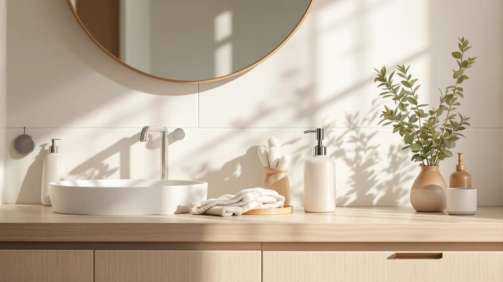

Are Soap Dispensers Worth It: Complete Guide (2026)
Prices and picks verified as of September 2026. Independent, reader-supported reviews.


Things to Know Before You Buy
- A refillable dispenser typically pays for itself within a handful of refills compared to buying new bottles of hand soap.
- Touchless models cut down on soap-covered handles and pump buttons, which matters more in a shared kitchen or bathroom than in a single-person household.
- Automatic dispensers need batteries or charging, and a dead unit turns back into an unusable bottle until you replace or recharge the power source.
- Manual pumps have fewer parts to fail and cost less upfront, but they put your hand back on the same surface every household member touches.
- Reservoir size, spout height, and whether the pump fits your counter or sink ledge matter more to daily satisfaction than brand name.
Are soap dispensers worth it for your kitchen or bathroom, or are you better off keeping soap in whatever bottle it arrived in? Once you factor in spilled soap, the sight of a half-empty plastic bottle by the faucet, and how much soap a hand pump wastes with each press, the case for a dedicated dispenser holds up for most households.
We compared touchless, foaming, and manual dispensers on upfront price, refill cost, reservoir size, and what verified buyers report after months of daily use, so you can answer the worth-it question for your own sink instead of guessing in a store aisle.
This guide covers what a dispenser actually changes about your routine, the categories worth knowing before you shop, how to pick one that fits your counter and habits, the mistakes that waste money, and how to keep a dispenser running well past its first refill.
What You Need to Know
Whether soap dispensers are worth it comes down to two things: how many people share your sink, and how much you value not touching a soap-crusted bottle. In a single-person bathroom, a bottle of hand soap does the job fine. In a kitchen where three or four people cook, wash dishes, and handle raw meat, a dispenser that dispenses a consistent dose without anyone gripping a sticky pump handle earns its keep quickly.
Cost is the other half of the equation. A basic manual dispenser runs $10 to $20 and lasts for years with occasional cleaning. Automatic touchless models cost more, usually $20 to $40, and add batteries or a charging cable to the maintenance list. Buyers who refill with bulk liquid soap instead of buying individual bottles report the dispenser paying for itself within two or three refills, since bulk soap costs a fraction of what bottled soap costs per ounce.
There's a tradeoff worth naming: automatic dispensers introduce a failure point that manual pumps don't have. A dead battery or a stuck sensor means no soap until you fix it, while a manual pump keeps working with nothing more than your hand. If reliability matters more to you than hands-free convenience, that's a real reason to stick with a pump model instead of an automatic one.
Types and Categories
Manual pump dispensers are the simplest category: a bottle, a spring-loaded pump, and a spout. They need no power source, cost the least, and dispense liquid or gel soap with one press. Reviewers who prioritize a dispenser that never breaks tend to land here, since there's nothing electronic to fail.
Automatic or touchless dispensers use an infrared sensor to release soap when a hand passes underneath. Most run on AA batteries or a rechargeable internal battery charged by USB. Owners report these cut down on cross-contamination in kitchens, since nobody touches a pump handle with dirty hands, but the sensor and motor add points of failure a manual pump doesn't have.
Foaming dispensers, whether manual or automatic, mix air into liquid soap as it dispenses, producing a light foam instead of a gel bead. This stretches a bottle of soap further and uses less product per wash, according to owners who track refill frequency, though foaming pumps clog more easily with thick, undiluted soap.
Material and mounting style round out the category list: glass, ceramic, stainless steel, or plastic reservoirs, and countertop versus wall-mounted designs. Wall-mounted units free up counter space but require drilling, which makes them a bigger commitment than a countertop bottle you can move or replace on a whim.
How to Choose
Start with reservoir size. A dispenser that holds less than 10 ounces needs refilling almost weekly in a busy kitchen, which defeats the convenience it's supposed to add. Look for at least 10 to 13 ounces of capacity for a kitchen sink, and you can go smaller for a guest bathroom that sees light use.
Check power source next if you're considering an automatic model. USB-rechargeable units save you from buying AA batteries repeatedly, but you'll need to remember to charge them, usually every three to six weeks with daily household use according to verified owner reviews. Battery-powered models are easier to keep running since you can swap batteries without hunting for a charging cable, but the ongoing cost adds up over a year.
Match the dispenser to your soap type before you buy. Foaming dispensers need soap formulated or diluted for foaming, and pouring thick liquid soap into one leads to clogs and uneven dispensing. If you already have a favorite liquid soap you don't want to change, a standard pump or automatic liquid dispenser fits better than a foaming model.
Finally, factor in spout height and base width against your actual sink or counter. A tall dispenser next to a shallow kitchen sink can knock into the faucet, and a wide base eats into limited counter space. Whether soap dispensers are worth it for your space specifically depends on this kind of fit as much as the features on the box.
Common Mistakes to Avoid
Buyers frequently choose the cheapest automatic dispenser without checking the reservoir size, then find themselves refilling it every three or four days. If you're weighing whether soap dispensers are worth the switch, a small tank erases most of the convenience an automatic model is supposed to offer.
Pouring the wrong soap type into a foaming dispenser is another repeat complaint in owner reviews. Thick dish soap or undiluted hand soap clogs the foaming mechanism and leaves you with a dispenser that dribbles instead of foams. Check the product listing for foaming compatibility before you buy soap in bulk for it.
Skipping the battery or charging plan trips people up too. An automatic dispenser that dies mid-week with no spare batteries or charging cable nearby becomes a decorative bottle until someone remembers to fix it. Keep a spare set of batteries on hand or plan a regular charging routine from day one.
Last, don't ignore placement. A dispenser bought without measuring the counter or sink ledge can end up too tall for an upper cabinet or too wide for a narrow sink deck. Measure the space first, then shop, rather than returning a dispenser that doesn't physically fit.
Care and Maintenance
A dispenser that gets cleaned occasionally lasts far longer than one that doesn't, and this is where most of the "are soap dispensers worth it" complaints in owner reviews actually trace back to. Soap residue builds up around the pump nozzle or sensor over weeks, slowing the flow or stopping it entirely.
Rinse the pump head or spout with warm water every couple of refills to clear dried soap buildup, and wipe down automatic sensors with a dry cloth so dust and soap film don't block detection. Avoid mixing different soap brands or thicknesses in the same reservoir without rinsing first, since combining products can cause separation or clogging inside the pump mechanism.
For automatic models, replace batteries at the first sign of a slow or inconsistent stream rather than waiting for a full failure, and store rechargeable units away from direct sunlight if they sit near a window, since heat shortens battery lifespan over time. Hand wash glass and ceramic reservoirs instead of running them through a dishwasher, since heat and detergent can dull finishes or loosen pump threading over repeated cycles.
Our Top Picks
If you've decided a dispenser is worth adding to your sink, here are three worth a look: a touchless automatic model, a budget-friendly manual set, and an easy-press pump for anyone who wants less resistance with each use.

Editor's Pick
Ipefan Automatic Soap Dispenser Touchless
A touchless sensor and rechargeable battery make this the pick for anyone who wants to stop touching a soap-covered pump handle.
$19.99
Check Price on Amazon
Best Value
Haocoott Soap Dispensers 2 PCS
Two manual pump dispensers for the price of most single automatic units, a solid choice for anyone testing whether a dedicated dispenser is worth it before spending more.
$21.99
Check Price on Amazon
Premium Choice
LINE+ARC Modern Easy-to-Press Soap &
An easy-press pump mechanism that needs less hand strength per use, a reasonable upgrade pick for households with older adults or kids at the sink.
$19.98
Check Price on AmazonAre soap dispensers worth it compared to just using the bottle soap comes in?
For most kitchens and bathrooms, yes.
Do automatic soap dispensers actually save soap?
Owners consistently report using less soap per wash with automatic dispensers because the sensor releases a fixed, small dose instead of the variable amount a hand pump delivers.
Frequently Asked Questions
Are soap dispensers worth it compared to just using the bottle soap comes in?
For most kitchens and bathrooms, yes. A dedicated dispenser cuts down on drips around the sink, holds more soap than a typical retail bottle, and lets you refill with cheaper bulk soap instead of buying a new plastic bottle every few weeks. The upfront cost of $10 to $30 usually pays for itself within a few refills.
Do automatic soap dispensers actually save soap?
Owners consistently report using less soap per wash with automatic dispensers because the sensor releases a fixed, small dose instead of the variable amount a hand pump delivers. The savings are modest, but they add up over a year of daily use, especially with foaming models that stretch liquid soap with air.
How long do automatic soap dispenser batteries last?
Battery life varies by brand and use, but reviewers of AA-powered models commonly report two to four months of daily household use before a swap, while rechargeable units typically need a charge every three to six weeks depending on how many people share the sink.
Can you put any liquid soap in a foaming dispenser?
No. Foaming dispensers are built for soap that's already thin or diluted with water, and pouring in thick, undiluted liquid soap tends to clog the foaming pump. Check the manufacturer's guidance before refilling, and dilute regular hand soap with water if the dispenser calls for it.
What size soap dispenser should I get for a kitchen sink?
Look for a reservoir of at least 10 to 13 ounces for a kitchen that sees regular use from more than one person. Smaller dispensers under 8 ounces run dry within days in a busy household and end up needing more frequent refills than most people want to deal with.
Verdict
Are soap dispensers worth it? For most kitchens and shared bathrooms, the answer is yes, as long as you match the type to your habits. A manual pump gets the job done for less money and fewer failure points, while an automatic model like the Ipefan touchless dispenser trades a slightly higher price for hands-free operation that owners consistently credit with less mess around the sink.
The households that get the least value are the ones that buy an automatic dispenser without checking reservoir size, battery type, or soap compatibility first, then end up frustrated by clogs or frequent refills. Measure your space, decide whether hands-free convenience matters enough to manage batteries or charging, and pick the category that fits how your household actually uses the sink rather than the model with the most features on the box.